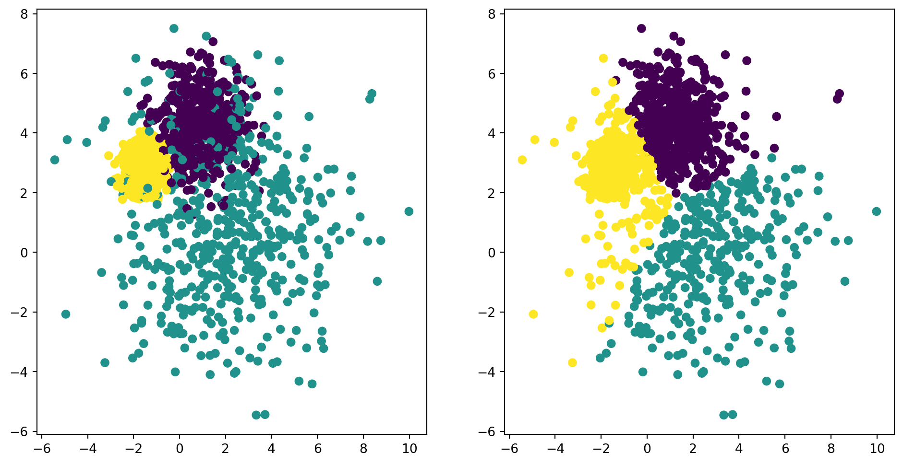
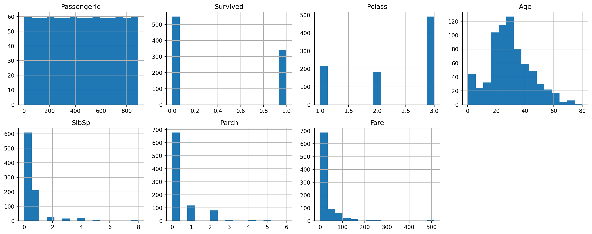
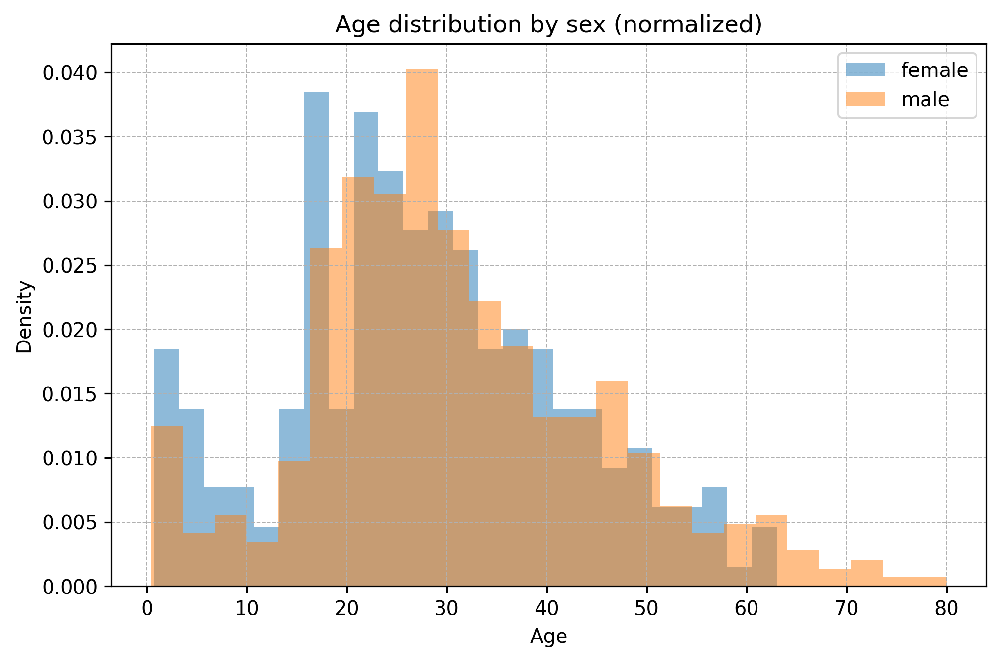
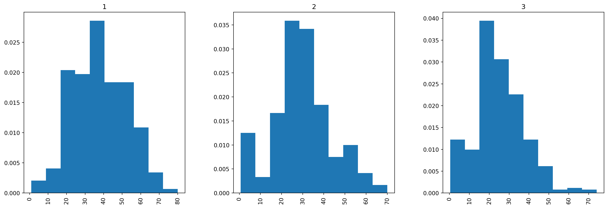

Code
import numpy as np
import pandas as pd
from sklearn.datasets import make_blobs
import matplotlib.pyplot as plt
import seaborn as sns
import polars as plHonlap: apagyidavid.web.elte.hu/2025-2026-1/dmml

Kísérleti jelleggel a következő gyakorlattól kezdve áthelyezzük a hangsúlyt arról, hogy hogyan lehet az eszközöket kód szintjén használni, arra, hogy mit tudunk, illetve főleg azt miért akarjuk megvalósítani velük.
Emiatt a feladatok megoldásához szükséges programozási ismeretek elsajátítása a Hallgató feladata. (A gyakorlat anyagai között lesznek példakódok, de minimális időt fogunk szentelni a soronkénti értelmezésükre.)
Mihez, illetve kihez tudunk fordulni segítségért? Például a következőkhöz:
Ezen a gyakorlaton ennek alapozunk meg: cél, hogy kipróbáljuk a Copilot, a debugger és a dokumentáció használatát.
Az alapelv az, hogy – megfelelő odafigyeléssel – szabad, sőt támogatott AI alapú eszközöket használni a tanulás, önfejlesztés eszközeként.

1 Részlet az előadás diáiból.
numpy gyakorlásAz alábbi feladatokhoz ahol csak lehet, használj alkalmas numpy függvényeket; ciklusok helyett keresd meg és használd a megfelelő vektorizált alternatívákat.
Böngészd, használd a dokumentációt:
import numpy as np
import pandas as pd
from sklearn.datasets import make_blobs
import matplotlib.pyplot as plt
import seaborn as sns
import polars as pl2 Érdemes tudni, hogy léteznek kifinomultabb módszerek is.
def initialize_centroids(points: np.ndarray, n_clusters: int) -> np.ndarray:
"""Initialize centroids for KMeans clustering."""
# TODO: If the points are in an m × n dimensional array,
# the shape of the output should be (n_clusters, n).
raise NotImplementedError()
def test_centroid_initialization():
points = np.array([[1, 2], [3, 4], [5, 6], [7, 8], [9, 10]])
k = 3
centroids = initialize_centroids(points, n_clusters=k)
assert centroids.shape[0] == k
assert centroids.shape[1] == points.shape[1]
return "Success!"
test_centroid_initialization()initialize_centroids függvénynél: np.ndarray és int a paraméterek típusa, míg a visszatérési érték típusa np.ndarray.
def closest_centroids(points: np.ndarray, centroids: np.ndarray) -> np.ndarray:
"""Assign each point to the closest centroid."""
# TODO: The result should be a 1D array where each element represents
# the index of the closest centroid for the corresponding point.
raise NotImplementedError()
# Example usage
points = np.array([[1, 2], [3, 4], [5, 6], [7, 8], [9, 10]])
centroids = np.array([[2, 2], [6, 6]])
print(closest_centroids(points, centroids))def calculate_new_centroids(X: np.ndarray, labels: np.ndarray, n_clusters: int) -> np.ndarray:
# TODO. (Hint: use a list comprehension.)
raise NotImplementedError()
# TODO: Example usagemax_iterations), illetve egy küszöbértéket is (tol). Ha a klaszterek középpontjai már csak összességében az előbbi értéknél kisebb mértékben mozdulnak el, leállunk.class KMeans:
def __init__(
self,
n_clusters: int,
max_iterations: int = 20,
tol: float = 1e-3,
):
self.n_clusters = n_clusters
self.max_iterations = max_iterations
self.tol = tol
def fit(self, X: np.ndarray):
self.centroids = initialize_centroids(X, self.n_clusters)
for _ in range(self.max_iterations):
# TODO: Use the previously implemented functions to run the k-means algorithm on X.
# (X is just an array of points, as before.)
raise NotImplementedError()
def fit_predict(self, X: np.ndarray) -> np.ndarray:
self.fit(X)
return self._labels
# TODO: Example usage
kmeans = KMeans(2)
X = np.array([[1, 2], [3, 4], [5, 6], [7, 8], [9, 10]])
kmeans.fit(X)
print(kmeans._labels)random_state = 0
np.random.seed(random_state)
n_samples = 1500
X, y = make_blobs(n_samples=n_samples, cluster_std=[1.0, 2.5, 0.5], random_state=random_state)
fig, (ax1, ax2) = plt.subplots(1, 2, figsize=(12, 6))
ax1.scatter(X[:, 0], X[:, 1], c=y)
y_pred = KMeans(n_clusters=3).fit_predict(X)
ax2.scatter(X[:, 0], X[:, 1], c=y_pred)
plt.show()Módosítsuk a calculate_new_centroids függvényt, hogy kezelje a fenti esetet. Sokféle ötlet, heurisztika alkalmazása lehetséges.
pandas gyakorlásHa egy kicsit is haladóbbnak érzed magad, nyugodtan ugorj a polars gyakorlás szakaszra.
A félév során sokat fogunk zsonglőrködni tabuláris adatokkal, ezért szükséges némi jártasság a pandas (vagy a polars) csomag terén.
Idézzük fel az idevonatkozó ismereteinket, és válaszoljunk meg néhány alapvető kérdést a Titanic adathalmazról.
df = pd.read_csv("https://apagyidavid.web.elte.hu/2025-2026-1/dmml/data/titanic.csv")
df.rename(columns={"Parch": "ParCh"}, inplace=True)
print(f"Shape: {df.shape}")
df.head()Shape: (891, 12)| PassengerId | Survived | Pclass | Name | Sex | Age | SibSp | ParCh | Ticket | Fare | Cabin | Embarked | |
|---|---|---|---|---|---|---|---|---|---|---|---|---|
| 0 | 1 | 0 | 3 | Braund, Mr. Owen Harris | male | 22.0 | 1 | 0 | A/5 21171 | 7.2500 | NaN | S |
| 1 | 2 | 1 | 1 | Cumings, Mrs. John Bradley (Florence Briggs Th... | female | 38.0 | 1 | 0 | PC 17599 | 71.2833 | C85 | C |
| 2 | 3 | 1 | 3 | Heikkinen, Miss. Laina | female | 26.0 | 0 | 0 | STON/O2. 3101282 | 7.9250 | NaN | S |
| 3 | 4 | 1 | 1 | Futrelle, Mrs. Jacques Heath (Lily May Peel) | female | 35.0 | 1 | 0 | 113803 | 53.1000 | C123 | S |
| 4 | 5 | 0 | 3 | Allen, Mr. William Henry | male | 35.0 | 0 | 0 | 373450 | 8.0500 | NaN | S |
# TODOmatplotlib segítségével vizualizáljuk oszloponként a hiányzó értékek arányát az összes sorhoz képest (matplotlib dokumentáció).# TODOseaborn segítségével (seaborn dokumentáció). (Ez csak egy “wrapper” a matplotlib felett.)# TODOHasználjuk a groupby és hist függvényeket a pandas DateFrame-re alkalmazva.
# TODOpolars gyakorlásAz elmúlt néhány évben egyre felkapottabbá váltak a Rust alapú eszközök a “Python ecosystem”-ben. Az uv és a ruff két olyan eszköz, amelyeket szinte minden új projektnél érdemes lehet használni:
uv dokumentáció);ruff dokumentáció).Mindkettő ugyanannak a cégnek a terméke, nyílt forráskodúak, viszont a licenszük aggaszt néhányakat.
A polars egy gyorsan fejlődő pandas alternatíva (polars dokumentáció).
polars key features
(Részlet a dokumentációból.)
Valószínűleg pandas alapok unalomig voltak már más órákon. Nagyon sokan a polars-ban látják a jövőt, azonban (főleg az elérhető anyagok, LLM-támogatottság szempontjából) az átállás – pláne akadémiai közegben – lassú és fáradságos. Tegyünk azért a jobb világért!
polars segítségével.# TODOTöbbeknél felmerült, hogy válasszuk az első \(k\) pontot az inputból centroidoknak.
Ennél valamivel jobb, ha a \(k\) darab kezdeti centroidot véletlenszerűen választjuk a pontok közül.
Említettük, hogy milyen problémái vannak a \(k\)-means algoritmusnak; az egyik ilyen, hogy érzékeny a kezdeti centroidok választására. Egy naiv megközelítés ennek megoldására, hogy futtassuk le az algoritmust sok különböző kezdeti centroiddal, és válasszuk azt a megoldást, amely a legkedvezőbb a célfüggvény szempontjából.3 Emiatt választjuk most inkább azt a megközelítést, hogy random sorsolunk, de persze csinálhatnánk azt is, hogy itt az első \(k\) elemet választjuk, és az újrahívások előtt permutálunk egyet a pontok array-én.
def initialize_centroids(points: np.ndarray, n_clusters: int) -> np.ndarray:
"""Initialize centroids for KMeans clustering."""
indices = np.random.choice(points.shape[0], size=n_clusters, replace=False)
return points[indices]
def test_centroid_initialization():
points = np.array([[1, 2], [3, 4], [5, 6], [7, 8], [9, 10]])
k = 3
centroids = initialize_centroids(points, n_clusters=k)
assert centroids.shape[0] == k
assert centroids.shape[1] == points.shape[1]
return "Success!"
test_centroid_initialization()'Success!'Hiba nélkül lefutottak a tesztek, szóval a dimenziók látszólag rendben vannak. Ellenőrizzünk kézzel is egy példa outputot, hogy azt kaptuk-e, mint amit vártunk:
initialize_centroids(np.array([[1, 2], [3, 4], [5, 6], [7, 8], [9, 10]]), n_clusters=3)array([[ 9, 10],
[ 1, 2],
[ 5, 6]])3 Mi a célfüggvény? Nem tértünk ki mindenkivel erre a kérdésre, az előadáson várhatóan elő fog kerülni. A lépéseinkkel tulajdonképpen a klaszteren belüli távolságok négyzetösszegének, mint célfüggvénynek a minimalizálására törekszünk. Ez ekvivalens a klaszterek közötti távolságok négyzetösszegének maximalizálásával. Formálisan ld. még Wikipedia: \(k\)-means clustering.
A feladatban szereplő függvény meghatározza a centroidokból a pontokba mutató vektorokat, és kiszámolja azok normáját: ezáltal megkapjuk a pontok centroidtoktól való távolságát.
def calculate_distances(points: np.ndarray, centroids: np.ndarray) -> np.ndarray:
"""Calculate the Euclidean distance from each point to every centroid."""
distances = np.linalg.norm(points[:, np.newaxis] - centroids, axis=2)
return distances
# Example usage
points = np.array([[1, 2], [3, 4], [5, 6]])
centroids = np.array([[2, 2], [6, 6]])
calculate_distances(points, centroids)array([[1. , 6.40312424],
[2.23606798, 3.60555128],
[5. , 1. ]])Fejben ellenőrizzünk néhány értéket!
Használjuk az előző függvényünket: határozzuk meg a távolságokat, majd pedig np.argmin-nel határozzuk meg, hogy hanyadik centroidtól való távolság a legrövidebb.
def closest_centroids(points: np.ndarray, centroids: np.ndarray) -> np.ndarray:
"""Assign each point to the closest centroid.
The result is a 1D array where each element represents
the index of the closest centroid for the corresponding point.
"""
distances = calculate_distances(points, centroids)
return np.argmin(distances, axis=1)
# Example usage
points = np.array([[1, 2], [3, 4], [5, 6]])
centroids = np.array([[2, 2], [6, 6]])
closest_centroids(points, centroids)array([0, 0, 1])def calculate_new_centroids(X: np.ndarray, labels: np.ndarray, n_clusters: int) -> np.ndarray:
clusters = [X[labels == i] for i in range(n_clusters)]
return np.array([cluster.mean(axis=0) for cluster in clusters])
# Example usage
points = np.array([[1, 2], [3, 4], [5, 6], [7, 8], [9, 10]])
labels = np.array([0, 0, 1, 1, 1])
calculate_new_centroids(points, labels, 2)array([[2., 3.],
[7., 8.]])class KMeans:
def __init__(
self,
n_clusters: int,
max_iterations: int = 20,
tol: float = 1e-3,
):
self.n_clusters = n_clusters
self.max_iterations = max_iterations
self.tol = tol
def fit(self, X: np.ndarray):
# Use the previously implemented functions to run KMeans algorithm on X.
self.centroids = initialize_centroids(X, self.n_clusters)
for _ in range(self.max_iterations):
self._labels = closest_centroids(X, self.centroids)
new_centroids = calculate_new_centroids(X, self._labels, self.n_clusters)
if np.linalg.norm(self.centroids - new_centroids) < self.tol:
break
self.centroids = new_centroids
def fit_predict(self, X: np.ndarray) -> np.ndarray:
self.fit(X)
return self._labels
# Example usage
kmeans = KMeans(2)
X = np.array([[1, 2], [3, 4], [5, 6], [7, 8], [9, 10]])
kmeans.fit(X)
kmeans._labelsarray([1, 1, 1, 0, 0])Futassuk le a fenti cellát néhányszor. Mit tapasztalunk?
random_state = 0
np.random.seed(random_state)
n_samples = 1500
X, y = make_blobs(n_samples=n_samples, cluster_std=[1.0, 2.5, 0.5], random_state=random_state)
fig, (ax1, ax2) = plt.subplots(1, 2, figsize=(12, 6))
ax1.scatter(X[:, 0], X[:, 1], c=y)
y_pred = KMeans(n_clusters=3).fit_predict(X)
ax2.scatter(X[:, 0], X[:, 1], c=y_pred)
plt.show()
df = pd.read_csv("https://apagyidavid.web.elte.hu/2025-2026-1/dmml/data/titanic.csv")
df = df.rename({"Parch": "ParCh"})
df.head()| PassengerId | Survived | Pclass | Name | Sex | Age | SibSp | Parch | Ticket | Fare | Cabin | Embarked | |
|---|---|---|---|---|---|---|---|---|---|---|---|---|
| 0 | 1 | 0 | 3 | Braund, Mr. Owen Harris | male | 22.0 | 1 | 0 | A/5 21171 | 7.2500 | NaN | S |
| 1 | 2 | 1 | 1 | Cumings, Mrs. John Bradley (Florence Briggs Th... | female | 38.0 | 1 | 0 | PC 17599 | 71.2833 | C85 | C |
| 2 | 3 | 1 | 3 | Heikkinen, Miss. Laina | female | 26.0 | 0 | 0 | STON/O2. 3101282 | 7.9250 | NaN | S |
| 3 | 4 | 1 | 1 | Futrelle, Mrs. Jacques Heath (Lily May Peel) | female | 35.0 | 1 | 0 | 113803 | 53.1000 | C123 | S |
| 4 | 5 | 0 | 3 | Allen, Mr. William Henry | male | 35.0 | 0 | 0 | 373450 | 8.0500 | NaN | S |
df.dtypesPassengerId int64
Survived int64
Pclass int64
Name object
Sex object
Age float64
SibSp int64
Parch int64
Ticket object
Fare float64
Cabin object
Embarked object
dtype: objectdf.info()<class 'pandas.core.frame.DataFrame'>
Index: 891 entries, 0 to 890
Data columns (total 12 columns):
# Column Non-Null Count Dtype
--- ------ -------------- -----
0 PassengerId 891 non-null int64
1 Survived 891 non-null int64
2 Pclass 891 non-null int64
3 Name 891 non-null object
4 Sex 891 non-null object
5 Age 714 non-null float64
6 SibSp 891 non-null int64
7 Parch 891 non-null int64
8 Ticket 891 non-null object
9 Fare 891 non-null float64
10 Cabin 204 non-null object
11 Embarked 889 non-null object
dtypes: float64(2), int64(5), object(5)
memory usage: 90.5+ KBdf.isna().sum()PassengerId 0
Survived 0
Pclass 0
Name 0
Sex 0
Age 177
SibSp 0
Parch 0
Ticket 0
Fare 0
Cabin 687
Embarked 2
dtype: int64df.describe()| PassengerId | Survived | Pclass | Age | SibSp | Parch | Fare | |
|---|---|---|---|---|---|---|---|
| count | 891.000000 | 891.000000 | 891.000000 | 714.000000 | 891.000000 | 891.000000 | 891.000000 |
| mean | 446.000000 | 0.383838 | 2.308642 | 29.699118 | 0.523008 | 0.381594 | 32.204208 |
| std | 257.353842 | 0.486592 | 0.836071 | 14.526497 | 1.102743 | 0.806057 | 49.693429 |
| min | 1.000000 | 0.000000 | 1.000000 | 0.420000 | 0.000000 | 0.000000 | 0.000000 |
| 25% | 223.500000 | 0.000000 | 2.000000 | 20.125000 | 0.000000 | 0.000000 | 7.910400 |
| 50% | 446.000000 | 0.000000 | 3.000000 | 28.000000 | 0.000000 | 0.000000 | 14.454200 |
| 75% | 668.500000 | 1.000000 | 3.000000 | 38.000000 | 1.000000 | 0.000000 | 31.000000 |
| max | 891.000000 | 1.000000 | 3.000000 | 80.000000 | 8.000000 | 6.000000 | 512.329200 |
numerical_cols = df.select_dtypes(include=['number']).columns
df[numerical_cols].hist(bins=15, figsize=(15, 6), layout=(2, 4))
plt.tight_layout()
plt.show()
Aggregálás groupby-jal:
df[["Age"]].agg(["min","max","mean","std"])| Age | |
|---|---|
| min | 0.420000 |
| max | 80.000000 |
| mean | 29.699118 |
| std | 14.526497 |
df.groupby("Sex")["Age"].agg(["min","max"])| min | max | |
|---|---|---|
| Sex | ||
| female | 0.75 | 63.0 |
| male | 0.42 | 80.0 |
fig, ax = plt.subplots(figsize=(8, 5), dpi=144)
df.groupby("Sex")["Age"] .hist(alpha=0.5, density=True, legend=True, grid=False, bins=25, ax=ax)
ax.set_title("Age distribution by sex (normalized)")
ax.set_xlabel("Age")
ax.set_ylabel("Density")
ax.grid(True, which='both', linestyle='--', linewidth=0.5)
plt.show()
Age feltételes eloszlása Pclass szerint:
df.hist("Age", by="Pclass", layout=(1, 3), density=True, figsize=(18, 6))array([<Axes: title={'center': '1'}>, <Axes: title={'center': '2'}>,
<Axes: title={'center': '3'}>], dtype=object)
df = pl.read_csv("https://apagyidavid.web.elte.hu/2025-2026-1/dmml/data/titanic.csv")
df = df.rename({"Parch": "ParCh"})
df.head()| PassengerId | Survived | Pclass | Name | Sex | Age | SibSp | ParCh | Ticket | Fare | Cabin | Embarked |
|---|---|---|---|---|---|---|---|---|---|---|---|
| i64 | i64 | i64 | str | str | f64 | i64 | i64 | str | f64 | str | str |
| 1 | 0 | 3 | "Braund, Mr. Owen Harris" | "male" | 22.0 | 1 | 0 | "A/5 21171" | 7.25 | null | "S" |
| 2 | 1 | 1 | "Cumings, Mrs. John Bradley (Fl… | "female" | 38.0 | 1 | 0 | "PC 17599" | 71.2833 | "C85" | "C" |
| 3 | 1 | 3 | "Heikkinen, Miss. Laina" | "female" | 26.0 | 0 | 0 | "STON/O2. 3101282" | 7.925 | null | "S" |
| 4 | 1 | 1 | "Futrelle, Mrs. Jacques Heath (… | "female" | 35.0 | 1 | 0 | "113803" | 53.1 | "C123" | "S" |
| 5 | 0 | 3 | "Allen, Mr. William Henry" | "male" | 35.0 | 0 | 0 | "373450" | 8.05 | null | "S" |
df.dtypes[Int64,
Int64,
Int64,
String,
String,
Float64,
Int64,
Int64,
String,
Float64,
String,
String]df.schemaSchema([('PassengerId', Int64),
('Survived', Int64),
('Pclass', Int64),
('Name', String),
('Sex', String),
('Age', Float64),
('SibSp', Int64),
('ParCh', Int64),
('Ticket', String),
('Fare', Float64),
('Cabin', String),
('Embarked', String)])Első ránézésre furcsának tűnhet, hogy az Age oszlop Float64 típusú, azonban a korábban linkelt leírás az adathalmazról megmagyarázza ezt: “age: Age is fractional if less than 1. If the age is estimated, is it in the form of xx.5”.
A hiányzó értékek arányának meghatározásához sokféle megközelítés lehetséges, például:
result = df.select(
pl.col("*").is_null().sum() / pl.len()
)
print(result)
result_melted = result.unpivot()
print(result_melted)
result_melted.plot.bar(x="variable", y="value")shape: (1, 12)
┌─────────────┬──────────┬────────┬──────┬───┬────────┬──────┬──────────┬──────────┐
│ PassengerId ┆ Survived ┆ Pclass ┆ Name ┆ … ┆ Ticket ┆ Fare ┆ Cabin ┆ Embarked │
│ --- ┆ --- ┆ --- ┆ --- ┆ ┆ --- ┆ --- ┆ --- ┆ --- │
│ f64 ┆ f64 ┆ f64 ┆ f64 ┆ ┆ f64 ┆ f64 ┆ f64 ┆ f64 │
╞═════════════╪══════════╪════════╪══════╪═══╪════════╪══════╪══════════╪══════════╡
│ 0.0 ┆ 0.0 ┆ 0.0 ┆ 0.0 ┆ … ┆ 0.0 ┆ 0.0 ┆ 0.771044 ┆ 0.002245 │
└─────────────┴──────────┴────────┴──────┴───┴────────┴──────┴──────────┴──────────┘
shape: (12, 2)
┌─────────────┬──────────┐
│ variable ┆ value │
│ --- ┆ --- │
│ str ┆ f64 │
╞═════════════╪══════════╡
│ PassengerId ┆ 0.0 │
│ Survived ┆ 0.0 │
│ Pclass ┆ 0.0 │
│ Name ┆ 0.0 │
│ Sex ┆ 0.0 │
│ … ┆ … │
│ ParCh ┆ 0.0 │
│ Ticket ┆ 0.0 │
│ Fare ┆ 0.0 │
│ Cabin ┆ 0.771044 │
│ Embarked ┆ 0.002245 │
└─────────────┴──────────┘numerical_cols = [col for col, dtype in zip(df.columns, df.dtypes) if dtype in [pl.Int64, pl.Float64]]
df[numerical_cols].describe()| statistic | PassengerId | Survived | Pclass | Age | SibSp | ParCh | Fare |
|---|---|---|---|---|---|---|---|
| str | f64 | f64 | f64 | f64 | f64 | f64 | f64 |
| "count" | 891.0 | 891.0 | 891.0 | 714.0 | 891.0 | 891.0 | 891.0 |
| "null_count" | 0.0 | 0.0 | 0.0 | 177.0 | 0.0 | 0.0 | 0.0 |
| "mean" | 446.0 | 0.383838 | 2.308642 | 29.699118 | 0.523008 | 0.381594 | 32.204208 |
| "std" | 257.353842 | 0.486592 | 0.836071 | 14.526497 | 1.102743 | 0.806057 | 49.693429 |
| "min" | 1.0 | 0.0 | 1.0 | 0.42 | 0.0 | 0.0 | 0.0 |
| "25%" | 224.0 | 0.0 | 2.0 | 20.0 | 0.0 | 0.0 | 7.925 |
| "50%" | 446.0 | 0.0 | 3.0 | 28.0 | 0.0 | 0.0 | 14.4542 |
| "75%" | 669.0 | 1.0 | 3.0 | 38.0 | 1.0 | 0.0 | 31.0 |
| "max" | 891.0 | 1.0 | 3.0 | 80.0 | 8.0 | 6.0 | 512.3292 |